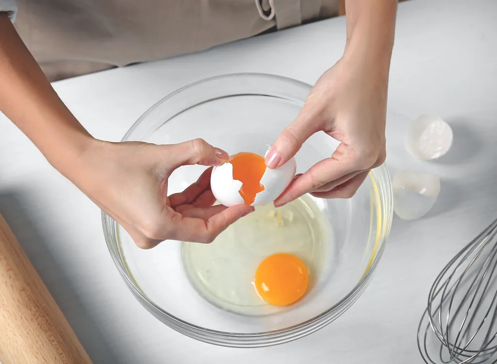
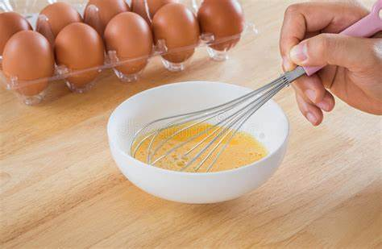
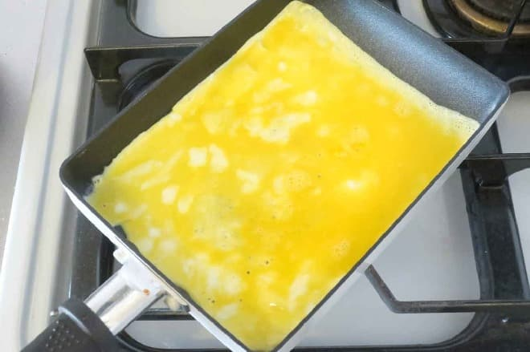

My Recipe of Tamagoyaki


Ingredients
1. 2 eggs
2. 1 teaspoon Dashi
3. 1 teaspoon water
4. 1/2 of teaspoon soy sauce
5. 1/2 of tablespoon sugar
6. Apporopriate amount of salad oil
Directions
1. Crack the eggs into a bowl and whisk to avoid foaming.

2. Add Japanese-style almighty dashi, sugar, and soy sauce to 1, and mix without foaming.

3. Add salad oil to the frying pan for egg frying, warm up the frying pan, and then add the mixture from 2 pour in half the amount.

4. Once the sorrounding area has hardened, stir around the center and then roll it up with a spatula.

5. Once you have finished rolling it all up, add half of remaining egg mixture and it starts to harden, roll it up some more.

6. Shape and bake. Once baked, cut into 4 equal pieces with a knife and place on a plate.

Michiru Mori
Y8 Online New